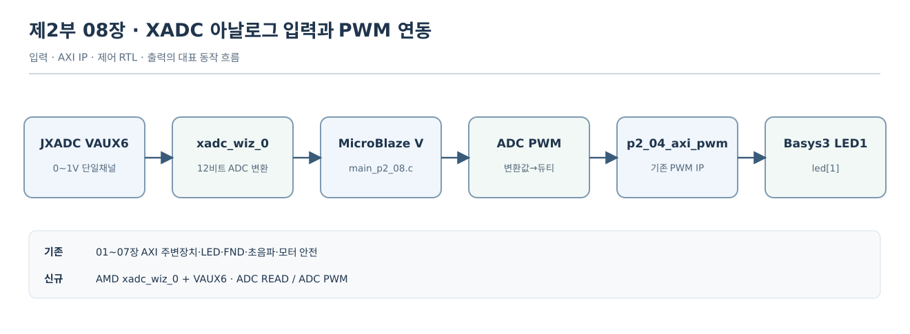

제2부 08장 · XADC 아날로그 입력과 PWM 연동
1. 과제 개요
AMD XADC Wizard를 AXI 주변장치로 추가하여 JXADC VAUX6 아날로그 값을 읽습니다. ADC READ는 변환값을 출력하고 ADC PWM은 기존 LED1 PWM 듀티를 한 번 갱신합니다.
2. 입력·출력 정의
| 구분 | 신호·명령 | 기능 |
|---|---|---|
| 아날로그 입력 | VAUX6 (JXADC) | XADC 범위 내 아날로그 전압 |
| UART 명령 | ADC READ / ADC PWM | 변환값 출력·PWM 갱신 |
| AXI 읽기 | xadc_wiz_0 | XADC 데이터 레지스터 |
| AXI 쓰기 | p2_04_axi_pwm | 기존 LED1 PWM 설정 |
| 보드 출력 | led[1] | ADC PWM 실행 시 밝기 변화 |
3. 전체 동작 구조

4. 기존 기능과 추가 기능
유지: 01~07장 AXI 주변장치·LED·FND·초음파·모터 안전
추가: AMD xadc_wiz_0 + VAUX6 · ADC READ / ADC PWM
핵심 원리·레지스터
2. 데이터 경로·레지스터와 명령
설정 기준| 항목 | 주소/범위 | 의미 |
|---|---|---|
| 항목 | 주소/범위 | 의미 |
| XADC VAUX6 | XADC_BASEADDR + 0x258 | AMD XADC Status Register / 12-bit 값은 비트 [15:4] |
| ADC RAW12 | 0~4095 | 단극성 0~1V 입력에 대응하는 12비트 코드 |
| ADC mV | 0~약 1000 | 표시용 정수 환산, 실제 측정 정확도를 보증하지 않음 |
| PWM 설정 | P2_04_PWM_BASEADDR | 04장 기존 IP의 PERIOD/DUTY/CTRL/APPLY 사용 |
| FND | 기존 03/06장 | XADC 전압은 FND 대신 UART에 표시해 자리별 의미 충돌을 방지 |
XADC의 유니폴라 측정 범위는 차동 전압 기준 0~1V입니다. 3.3V GPIO 신호를 직접 연결하지 않고 VAUX6의 P/N 입력과 공통모드 조건을 확인합니다.
5. Vivado·Vitis 따라하기
- 01. 08장 독립 프로젝트 복제
Vivado → File → Project → Save As → 프로젝트 이름
soc_ip_design_08, 저장 경로Home → soc → hw/로 저장한다.확인: 08장
soc_ip_design_08.xpr생성, 07장 XPR은 그대로 존재 - 02. Block Design 열기
Flow Navigator → IP INTEGRATOR → Open Block Design →
soc11_integration.bd를 연다.확인: MicroBlaze·AXI interconnect·기존 IP 연결이 유지
- 03. XADC Wizard 검색 및 추가
Block Design → + Add IP →
XADC Wizard를 검색·추가해 인스턴스 이름을xadc_wiz_0로 확인한다.확인: XADC IP 블록이 BD에 추가되고 AXI 포트 설정을 선택 가능
- 04. XADC 기본 설정
Double click xadc_wiz_0 → Basic → Interface Options를
AXI4-Lite, Timing Mode를Continuous로 선택한다.확인: 심벌에
s_axi_lite와s_axi_aclk·리셋 관련 포트 표시 - 05. 채널과 입력 모드 설정
XADC Wizard → ADC Setup / Single Channel → Startup Channel Selection을
Single Channel, 측정 채널VAUXP6/VAUXN6, Unipolar를 선택한다.확인: Channel VAUX6 선택과 차동 단극성(0~1V) 확인
- 06. XADC IP 설정 확정
XADC Wizard → Summary → OK → AXI4-Lite, VAUX6, Continuous, Unipolar 목록을 점검하고 OK를 누른다.
확인:
Vaux6아날로그 인터페이스와 AXI Slave 포트 확인 - 07. AXI 연결 자동화
Block Design → Run Connection Automation → XADC
s_axi_lite를 MicroBlaze 쪽 AXI master/interconnect로 연결한다.확인: XADC AXI Slave가 연결되고 주소 범위가 Address Editor에 나타남
- 08. Clock·Reset 연결
Block Design → XADC s_axi_aclk / s_axi_aresetn → 기존 SoC AXI Clock과 같은 도메인의 Clock·정합된 Active-Low Reset에 연결한다.
확인: Validate Design에서 누락된 Clock/Reset 경고 없음
- 09. Vaux6 외부화
Block Design → xadc_wiz_0 → Vaux6 → Vaux6에
Make External을 실행하고 BD 외부 차동 포트의 실제 RTL 이름을 확인한다.확인: 생성 Wrapper에
vauxp6/vauxn6가 노출되거나 실제 다른 명칭이 나타남 - 10. AXI 주소 확인
IP INTEGRATOR → Address Editor → XADC 주소를 자동 할당하고 실제
Base Address와 범위를 기록한다.확인: 기존 01~07장 주소와 겹치지 않음. 주소는 이 문서에서 고정하지 않음
- 11. BD 유효성 검사와 Wrapper 재생성
Block Design → Validate Design → Generate Output Products → Validate → 우클릭 BD → Generate Output Products → Create HDL Wrapper에서 Vivado 관리 선택한다.
확인:
soc11_integration_wrapper.v에 새 VAUX6 포트가 포함됨 - 12. 사용자 Top 연결 추가
Sources → Design Sources → 사용자 Top → 제공 Top 파일을 08장 복제본에 등록.
vauxp6/vauxn6포트를 연결한다.확인: 기존 LED/UART/FND/모터 연결 유지, Top에 always/FSM 없음
- 13. XDC 및 아날로그 핀 검사
Constraints → 기존 XDC + Package/Implementation Checks → JXADC1
J3, JXADC7K3에 해당하는 XADC 아날로그 채널인지 확인한다.확인: 아날로그 VAUX6 핀 사용, 다른 JA/JB/JC 자원과 중복 없음
- 14. 합성·배치배선·Timing
Flow Navigator → Run Synthesis → Run Implementation → 합성 및 구현 수행 후 Utilization, Timing Summary, DRC, Critical Warning을 기록한다.
확인: 실제 WNS/TNS·DRC·XADC 배치 확인
- 15. XSA 내보내기
File → Export → Export Hardware → 실제 빌드 완료 후 Bitstream 포함 XSA를 Export한다.
확인: 08장 Hardware Platform용 XSA 및 Bitstream 기록
- 16. Vitis 플랫폼 갱신
Vitis 2024.2 → Platform Component → 08장 신규 플랫폼을 만들거나 플랫폼의 XSA를 교체한 후 BSP 재생성/Build한다.
확인: XADC Base Address와 UART/INTC 주소 관련 정의가 xparameters.h 등에 생성
- 17. C 소스 08장 버전 등록
Vitis → Application Component → Sources → main_p2_08.c, p2_08_adc_logic.c 및 재사용 보조 C를 등록한다.
확인: C 주 함수는
main_p2_08.c의 main 하나만 - 18. 실제 AXI 주소·인터럽트 설정
Vitis → BSP xparameters.h / C Definitions →
P2_01~P2_08_*_BASEADDR,P2_03_BTN_INTR_ID, SDT 또는 Classic IRQ 인자를 실제 값으로 지정한다.확인: 미설정 시
#error, 설정 시 빌드 가능 - 19. UART 테스트 준비
PC → moserial/minicom → 115200 baud, 8N1, Flow Control OFF, Enter(CR/LF)로 준비한다.
확인: 부팅 메시지
P2-08및 명령 목록 출력 - 20. 외부 아날로그 입력 안전 배선
Basys3 JXADC, 전원 OFF 상태 → 10k 가변저항(3.3V-GND) 출력 → 27k 직렬 → JXADC1(P); JXADC1(P)→10k→GND; JXADC7(N)→GND. 전원 투입 전 전압 측정.
확인: 분압 P-N 차동 전압은 0~약 0.892V, P·N 극성 확인
- 21. ADC READ로 전압 확인
UART 터미널 → 명령 입력 →
ADC READ입력 후 가변저항을 조금 바꾸고 다시 읽는다.확인:
ADC AUX6 RAW=... MV=... PWM_REF=...%형태. 값은 실제 연결 전까지 미정 - 22. ADC PWM으로 LED1 갱신
UART 터미널 → 명령 입력 →
ADC PWM입력 후STATUS를 조회한다.확인:
OK ADC PWM NN% QUEUED또는 Pending 중이면BUSY - 23. 모터·FND·기존 기능 회귀
UART → 기존 명령과 Basys3 확인 →
LED ON,DISP 0050,SONIC READ,MOTOR STOP,STATUS를 순차 실행한다.확인: LED0/LED1/LED2, FND, 모터 보호의 출력 소유권 유지
6. UART·보드 동작 확인
- ADC READ로 실제 변환값 확인
- 입력을 변경하며 읽기값 변화 확인
- ADC PWM으로 LED1 듀티 갱신
- PWM 50으로 기존 수동 제어 회귀
- 모터·초음파 안전 동작 회귀
버스 주소는 실제 Address Editor 및 BSP의 값으로 설정하고, 동작 확인 시 UART 응답·출력·안전 상태를 대조합니다.
7. 전체 RTL·C 소스 및 테스트벤치
각 소스의 원래 모듈명·함수명을 유지했습니다. XDC 전체 코드는 생략하며, 실제 핀 제약은 해당 실습 단계에서 확인합니다.
rtl/basys3_soc11_top_p2_08.v — VAUX6 외부 핀 연결
// (학습 주석) VAUX6 외부 핀 연결
// P2-08 USER TOP: Shell/Wrapper ONLY. No always/FSM/policy expressions.
// (유지) LED0 P2-01; LED1 P2-05 AUTO/PWM controller;
// (변경) LED2 P2-06 sonic_alert, LED3~15 old GPIO.
// WARNING: generated BD Wrapper must expose vauxp6/vauxn6 before this file can elaborate.
module basys3_soc11_top (
input wire clk, input wire btnC,
input wire btnU, input wire btnD, input wire btnL, input wire btnR,
input wire cds_digital, // JA1, J1 (P2-05)
output wire sonic_trig, // JA2, L2; see level-shifting note
input wire sonic_echo, // JA3, J2; external 5V->3.3V conversion required
output wire motor_in1, output wire motor_in2, output wire motor_ena,
input wire [15:0] sw, output wire [15:0] led,
// (추가) JXADC1(P)·JXADC7(N) : VAUX6 쌍, 디지털 I/O 아님.
input wire vauxp6, input wire vauxn6,
input wire RsRx, output wire RsTx,
output wire [6:0] seg, output wire [3:0] an, output wire dp
);
wire [15:0] gpio_led;
wire p2_led0;
wire pwm_led1;
wire auto_enable, cds_dark, cds_valid;
wire light_led1;
wire sonic_alert, sonic_unsafe;
auto_light_controller u_light_controller (
.pwm_led_i(pwm_led1),.auto_enable_i(auto_enable),
.sensor_dark_i(cds_dark),.sensor_valid_i(cds_valid),
.led1_o(light_led1)
);
// (변경) Pure board-bit wiring; LED2 has exactly one source.
assign led = {gpio_led[15:3], sonic_alert, light_led1, p2_led0};
soc11_integration_wrapper u_soc11 (
.clk(clk),.btnC(btnC),
.btnU(btnU),.btnD(btnD),.btnL(btnL),.btnR(btnR),
.sw_tri_i(sw),.led_tri_o(gpio_led),
.UART_0_rxd(RsRx),.UART_0_txd(RsTx),
.p2_led_o(p2_led0),.pwm_led1(pwm_led1),
.fnd_seg(seg),.fnd_an(an),.fnd_dp(dp),
.cds_digital(cds_digital),
.cds_dark(cds_dark),.cds_valid(cds_valid),
.cds_auto_enable(auto_enable),
.sonic_trig(sonic_trig),.sonic_echo(sonic_echo),
.sonic_alert(sonic_alert),.sonic_unsafe(sonic_unsafe),
.motor_in1(motor_in1),.motor_in2(motor_in2),
.motor_ena(motor_ena),
// (추가) BD XADC Wizard Vaux6를 Make External 후 wrapper 포트 재생성.
.vauxp6(vauxp6),.vauxn6(vauxn6)
);
endmodule
sw/main_p2_08.c — 누적 명령·ADC READ/ADC PWM
/* (학습 주석) 누적 명령·ADC READ/ADC PWM; 주변장치 주소와 명령 처리 흐름을 함께 확인합니다. */
/* P2-08: retain P2-01~07 and add XADC READ / PWM control.
* NOTE: Base addresses, Interrupt ID/Parent MUST be read from actual BSP.
* This source intentionally rejects unknown constants before target build.
*/
#include "xparameters.h"
#include "xil_types.h" /* u8, u32, UINTPTR */
#include "xil_io.h" /* Xil_In32, Xil_Out32 */
#include "xuartlite_l.h" /* UART Lite byte functions + FIFO empty check */
#include "xstatus.h"
#include "xil_exception.h"
#ifdef SDT
#include "xinterrupt_wrap.h" /* SDT interrupt API */
#else
#include "xintc.h" /* Classic interrupt controller API */
#endif
#include "p2_03_logic.h"
#include "p2_04_pwm_logic.h" // Reused 04 PWM parser / duty calculation
#include "p2_05_cds_logic.h" // Existing AUTO/CDS command parser
#include "p2_06_sonic_logic.h" // (유지) SONIC/WARN command parser
#include "p2_07_motor_logic.h" // (추가) MOTOR FWD/REV/STOP/STATUS parser
#include "p2_08_adc_logic.h" // (추가) XADC 12비트·mV·PWM 변환 및 명령 처리
#ifndef P2_04_PWM_BASEADDR
#define P2_04_PWM_BASEADDR 0xFFFFFFFFU
#endif
#if P2_04_PWM_BASEADDR == 0xFFFFFFFFU
#error "Set P2_04_PWM_BASEADDR from CURRENT Vivado Address Editor/xparameters.h"
#endif
// (추가) Never guess the fifth AXI IP base: use CURRENT generated BSP.
#ifndef P2_05_CDS_BASEADDR
#define P2_05_CDS_BASEADDR 0xFFFFFFFFU
#endif
#if P2_05_CDS_BASEADDR == 0xFFFFFFFFU
#error "Set P2_05_CDS_BASEADDR from CURRENT Address Editor/xparameters.h"
#endif
#ifndef P2_01_LED_BASEADDR
#define P2_01_LED_BASEADDR 0xFFFFFFFFU
#endif
#ifndef P2_02_FND_BASEADDR
#define P2_02_FND_BASEADDR 0xFFFFFFFFU
#endif
#ifndef P2_03_BTN_BASEADDR
#define P2_03_BTN_BASEADDR 0xFFFFFFFFU
#endif
#if P2_01_LED_BASEADDR == 0xFFFFFFFFU || P2_02_FND_BASEADDR == 0xFFFFFFFFU || P2_03_BTN_BASEADDR == 0xFFFFFFFFU
#error "Set all three AXI IP addresses from CURRENT Address Editor/xparameters.h"
#endif
#if P2_01_LED_BASEADDR == P2_02_FND_BASEADDR || P2_01_LED_BASEADDR == P2_03_BTN_BASEADDR || P2_02_FND_BASEADDR == P2_03_BTN_BASEADDR
#error "Three user AXI IP base addresses must be unique"
#endif
#ifndef P2_03_BTN_INTR_ID
#error "Fill P2_03_BTN_INTR_ID from CURRENT generated BSP interrupt map"
#endif
#ifdef SDT
#ifndef P2_03_BTN_INTR_PARENT
#error "Fill P2_03_BTN_INTR_PARENT (SDT encoded interrupt parent) from actual BSP"
#endif
#else
#ifndef P2_03_INTC_DEVICE_ID
#error "Fill P2_03_INTC_DEVICE_ID from Classic BSP"
#endif
#endif
#if defined(XPAR_XUARTLITE_0_BASEADDR)
#define UART_BASEADDR XPAR_XUARTLITE_0_BASEADDR
#elif defined(XPAR_UARTLITE_0_BASEADDR)
#define UART_BASEADDR XPAR_UARTLITE_0_BASEADDR
#elif defined(XPAR_AXI_UARTLITE_0_BASEADDR)
#define UART_BASEADDR XPAR_AXI_UARTLITE_0_BASEADDR
#else
#error "Check UART Lite base macro in the generated xparameters.h"
#endif
#define FND_VAL_REG 0x00U
#define FND_CTRL_REG 0x04U
#define BTN_PENDING 0x00U
#define BTN_ENABLE 0x04U
#define BTN_PRESSED 0x08U
#define BTN_ID 0x0CU
#define BTN_COALESCED 0x10U
// P2-04 register offsets: 32-bit, byte-addressed.
#define PWM_PERIOD_CFG 0x00U
#define PWM_DUTY_CFG 0x04U
#define PWM_CTRL_CFG 0x08U
#define PWM_APPLY 0x0CU
#define PWM_STATUS 0x10U
#define PWM_PERIOD_ACT 0x14U
#define PWM_DUTY_ACT 0x18U
#define PWM_ID 0x1CU
#define PWM_IP_ID 0x00040001U
#define PWM_PERIOD_TICKS 100000U // AXI Clock이 실제 100MHz일 때 1kHz.
#if P2_04_PWM_BASEADDR == P2_01_LED_BASEADDR || \
P2_04_PWM_BASEADDR == P2_02_FND_BASEADDR || \
P2_04_PWM_BASEADDR == P2_03_BTN_BASEADDR
#error "New PWM IP base must differ from all prior IP addresses"
#endif
// (추가) P2-05 digital CdS AXI register map (32-bit byte offsets).
#define CDS_CTRL 0x00U
#define CDS_STATUS 0x04U
#define CDS_IP_ID 0x08U
#define CDS_FILTER 0x0CU
#define CDS_EXPECTED_ID 0x00050001U
#ifndef P2_06_SONIC_BASEADDR
#define P2_06_SONIC_BASEADDR 0xFFFFFFFFU
#endif
#if P2_06_SONIC_BASEADDR == 0xFFFFFFFFU
#error "Set P2_06_SONIC_BASEADDR from CURRENT Address Editor and BSP"
#endif
#if P2_05_CDS_BASEADDR == P2_01_LED_BASEADDR || \
P2_05_CDS_BASEADDR == P2_02_FND_BASEADDR || \
P2_05_CDS_BASEADDR == P2_03_BTN_BASEADDR || \
P2_05_CDS_BASEADDR == P2_04_PWM_BASEADDR
#error "P2-05 CdS IP base address must differ from P2-01~04"
#endif
// (추가) P2-06 AXI4-Lite offsets; all byte offsets.
#define SONIC_CTRL 0x00U
#define SONIC_STATUS 0x04U
#define SONIC_DIST_CM 0x08U
#define SONIC_ECHO_US 0x0CU
#define SONIC_WARN_CFG 0x10U
#define SONIC_SEQ 0x14U
#define SONIC_ID 0x18U
#define SONIC_CLK_HZ 0x1CU
#define SONIC_EXPECTED_ID 0x00060001U
#if P2_06_SONIC_BASEADDR == P2_01_LED_BASEADDR || \
P2_06_SONIC_BASEADDR == P2_02_FND_BASEADDR || \
P2_06_SONIC_BASEADDR == P2_03_BTN_BASEADDR || \
P2_06_SONIC_BASEADDR == P2_04_PWM_BASEADDR || \
P2_06_SONIC_BASEADDR == P2_05_CDS_BASEADDR
#error "P2-06 SONIC AXI base must be distinct from all previous IPs"
#endif
// (추가) All AXI motor addresses are BSP-derived; never invent a base.
#ifndef P2_07_MOTOR_BASEADDR
#define P2_07_MOTOR_BASEADDR 0xFFFFFFFFU
#endif
#if P2_07_MOTOR_BASEADDR == 0xFFFFFFFFU
#error "Set P2_07_MOTOR_BASEADDR from CURRENT Vivado Address Editor/xparameters.h"
#endif
#if P2_07_MOTOR_BASEADDR == P2_01_LED_BASEADDR || \
P2_07_MOTOR_BASEADDR == P2_02_FND_BASEADDR || \
P2_07_MOTOR_BASEADDR == P2_03_BTN_BASEADDR || \
P2_07_MOTOR_BASEADDR == P2_04_PWM_BASEADDR || \
P2_07_MOTOR_BASEADDR == P2_05_CDS_BASEADDR || \
P2_07_MOTOR_BASEADDR == P2_06_SONIC_BASEADDR
#error "P2-07 motor AXI base must be distinct from all other IPs"
#endif
// (추가) 새 XADC Wizard AXI 주소는 실제 Address Editor에서만 가져온다.
#ifndef P2_08_XADC_BASEADDR
#define P2_08_XADC_BASEADDR 0xFFFFFFFFU
#endif
#if P2_08_XADC_BASEADDR == 0xFFFFFFFFU
#error "Set P2_08_XADC_BASEADDR from CURRENT Vivado Address Editor/xparameters.h"
#endif
#if P2_08_XADC_BASEADDR == P2_01_LED_BASEADDR || \
P2_08_XADC_BASEADDR == P2_02_FND_BASEADDR || \
P2_08_XADC_BASEADDR == P2_03_BTN_BASEADDR || \
P2_08_XADC_BASEADDR == P2_04_PWM_BASEADDR || \
P2_08_XADC_BASEADDR == P2_05_CDS_BASEADDR || \
P2_08_XADC_BASEADDR == P2_06_SONIC_BASEADDR || \
P2_08_XADC_BASEADDR == P2_07_MOTOR_BASEADDR
#error "P2-08 XADC AXI base must differ from every previously used AXI IP base"
#endif
/* AMD sysmon xsysmon_hw.h: XSM_AUX06_OFFSET, Artix-7 offset 0x258.
* XADC의 전용 Status Register이며 사용자 IP가 아니다. */
#define XADC_AUX06_OFFSET 0x258U
#define MOTOR_CMD_REG 0x00U
#define MOTOR_STATUS_REG 0x04U
#define MOTOR_ID_REG 0x08U
#define MOTOR_DEADTIME 0x0CU
#define MOTOR_FRESHNESS 0x10U
#define MOTOR_CLK_HZ 0x14U
#define MOTOR_EXPECTED_ID 0x00070001U
#define LINE_CAP 32U
static P2AppState app;
static u8 pwm_requested_percent = 0U;
// (추가) The C application owns control policy; RTL filters raw CdS signal.
static u8 cds_auto_enabled = 0U;
static u8 sonic_auto_enabled = 0U;
static u8 sonic_warn_enabled = 1U;
static u8 sonic_view = 0U; // 1: DIST(cm) FND view overrides VALUE/EVENTS.
static u8 sonic_view_fresh = 0U; // Blank stale result until next completion after ON.
static u32 sonic_seq_seen = 0U;
static u8 cds_dark_when_low = 1U; // Start assumption; verify DO via CDS READ.
static u8 adc_last_applied = 0U; // (추가) ADC PWM 명령의 마지막 요청 Duty
static u8 adc_apply_seen = 0U; // (추가) 아직 적용한 적 없음을 구분
static volatile u32 irq_counts[8]; // ISR writes monotonically; main reads.
static u32 handled_counts[8]; // Main-only processed counts.
#ifndef SDT
static XIntc intc;
#endif
static void uart_puts(const char *s)
{
while (*s) XUartLite_SendByte(UART_BASEADDR, (u8)*s++);
}
static void uart_hex32(u32 v)
{
const char hex[] = "0123456789ABCDEF";
int shift;
for (shift = 28; shift >= 0; shift -= 4)
XUartLite_SendByte(UART_BASEADDR, (u8)hex[(v >> shift) & 15U]);
}
static void uart_dec4(u32 value)
{
int d;
u32 divisors[4] = {1000U, 100U, 10U, 1U};
for (d = 0; d < 4; ++d) {
u32 n = (value / divisors[d]) % 10U;
XUartLite_SendByte(UART_BASEADDR, (u8)('0' + n));
}
}
// (추가) 0~4294967295를 선행 0 없이 UART에 출력.
static void uart_dec_u32(u32 value)
{
char tmp[10]; // u32 십진수 최대 10자리.
unsigned used = 0U;
do {
tmp[used++] = (char)('0' + (value % 10U));
value /= 10U;
} while (value != 0U);
while (used != 0U)
XUartLite_SendByte(UART_BASEADDR, (u8)tmp[--used]);
}
// (추가) 이전 설정이 반영 중이면 BUSY, 아니면 다음 주기 적용을 예약.
static int pwm_queue_percent(u8 percent)
{
u32 duty;
if ((Xil_In32(P2_04_PWM_BASEADDR + PWM_STATUS) & 1U) != 0U)
return 0; // 기존 Pending 설정을 덮지 않는다.
duty = pwm_duty_for_percent(PWM_PERIOD_TICKS, percent);
Xil_Out32(P2_04_PWM_BASEADDR + PWM_PERIOD_CFG, PWM_PERIOD_TICKS);
Xil_Out32(P2_04_PWM_BASEADDR + PWM_DUTY_CFG, duty);
Xil_Out32(P2_04_PWM_BASEADDR + PWM_CTRL_CFG, percent ? 1U : 0U);
Xil_Out32(P2_04_PWM_BASEADDR + PWM_APPLY, 1U);
pwm_requested_percent = percent;
return 1;
}
// (추가) 7-series XADC AXI 데이터 Status는 상위 12비트가 유효하다.
static uint16_t adc_sample_raw12(void)
{
u32 reg32 = Xil_In32(P2_08_XADC_BASEADDR + XADC_AUX06_OFFSET);
return (uint16_t)adc_raw12_from_status(reg32);
}
// (추가) 샘플 레지스터의 현재 저장값을 출력한다; 신규 변환 완료 여부를 나타내지 않는다.
static void adc_print_reading(void)
{
uint16_t raw = adc_sample_raw12();
uart_puts("ADC AUX6 RAW="); uart_dec_u32(raw);
uart_puts(" MV="); uart_dec_u32(adc_millivolts_from_raw(raw));
uart_puts(" PWM_REF="); uart_dec_u32(adc_percent_from_raw(raw));
uart_puts("% (stored sample; freshness not guaranteed)\r\n");
}
// (추가) Write configuration as one atomic 32-bit AXI register update.
static void cds_commit_control(void)
{
Xil_Out32(P2_05_CDS_BASEADDR + CDS_CTRL,
cds_control_word(cds_auto_enabled, cds_dark_when_low));
}
// (추가) Read sensor pins via AXI status, not by polling a physical GPIO.
static void cds_print_reading(void)
{
u32 bits = Xil_In32(P2_05_CDS_BASEADDR + CDS_STATUS);
uart_puts("CDS RAW="); uart_dec_u32(bits & 1U);
uart_puts(" DARK="); uart_dec_u32((bits >> 1) & 1U);
uart_puts(" VALID="); uart_dec_u32((bits >> 2) & 1U);
uart_puts(" GATE="); uart_dec_u32((bits >> 3) & 1U);
uart_puts(" AUTO="); uart_dec_u32((bits >> 4) & 1U);
uart_puts(" POL="); uart_puts((bits & (1U << 5)) ? "LOW" : "HIGH");
uart_puts("\r\n");
}
// (추가) 06장 STATUS는 최근 완료된 샘플(VALID/TIMEOUT/RANGE)을 보존.
// SEQ is a lightweight change marker; the HW has no atomic multiword latch.
static void sonic_read_state(u32 *status, u32 *cm, u32 *seq)
{
u32 a, b;
unsigned tries;
for (tries = 0; tries < 3U; ++tries) {
a = Xil_In32(P2_06_SONIC_BASEADDR + SONIC_SEQ);
*status = Xil_In32(P2_06_SONIC_BASEADDR + SONIC_STATUS);
*cm = Xil_In32(P2_06_SONIC_BASEADDR + SONIC_DIST_CM);
b = Xil_In32(P2_06_SONIC_BASEADDR + SONIC_SEQ);
if (a == b) { *seq = b; return; }
}
*seq = b; // Contended snapshot: STATUS logs must not claim atomicity.
}
static void sonic_commit_ctrl(void)
{
Xil_Out32(P2_06_SONIC_BASEADDR + SONIC_CTRL,
(u32)sonic_auto_enabled | ((u32)sonic_warn_enabled << 2));
}
static void sonic_print_reading(void)
{
u32 st, cm, seq, echo_us;
sonic_read_state(&st,&cm,&seq);
echo_us = Xil_In32(P2_06_SONIC_BASEADDR + SONIC_ECHO_US);
uart_puts("SONIC CM="); uart_dec_u32(cm);
uart_puts(" ECHO_US="); uart_dec_u32(echo_us);
uart_puts(" VALID="); uart_dec_u32((st >> 1) & 1U);
uart_puts(" TIMEOUT="); uart_dec_u32((st >> 2) & 1U);
uart_puts(" RANGE_ERROR="); uart_dec_u32((st >> 3) & 1U);
uart_puts(" BUSY="); uart_dec_u32(st & 1U);
uart_puts(" ALERT="); uart_dec_u32((st >> 4) & 1U);
uart_puts(" UNSAFE="); uart_dec_u32((st >> 5) & 1U);
uart_puts(" SEQ="); uart_dec_u32(seq);
uart_puts(" WARN_CM="); uart_dec_u32(
Xil_In32(P2_06_SONIC_BASEADDR + SONIC_WARN_CFG));
uart_puts("\r\n");
}
static void fnd_commit(void)
{
if (sonic_view) {
u32 st, cm, seq;
uint16_t visible;
sonic_read_state(&st,&cm,&seq);
visible = sonic_visible_cm(st,cm);
// (추가) D3..D0: decimal 0002..0400 cm; no unit/dot hardware.
// Invalid/timeout => FND blank, not a misleading '0000'.
Xil_Out32(P2_02_FND_BASEADDR + FND_VAL_REG, p2_to_bcd4(visible));
Xil_Out32(P2_02_FND_BASEADDR + FND_CTRL_REG,
(sonic_view_fresh && sonic_sample_valid(st,cm)) ? 1U : 0U);
return;
}
// (유지) P2-03 VALUE/EVENTS shown when SONIC OFF.
Xil_Out32(P2_02_FND_BASEADDR + FND_VAL_REG,
p2_to_bcd4(p2_visible_decimal(&app)));
Xil_Out32(P2_02_FND_BASEADDR + FND_CTRL_REG, (u32)app.display_on);
}
static void service_sonic_display(void)
{
u32 seq = Xil_In32(P2_06_SONIC_BASEADDR + SONIC_SEQ);
if (seq != sonic_seq_seen) {
sonic_seq_seen = seq;
if (sonic_view) { sonic_view_fresh = 1U; fnd_commit(); }
}
}
// Level interrupt: read PENDING, acknowledge W1C, count each asserted type.
static void btn_irq_handler(void *unused)
{
u32 pending;
unsigned i;
(void)unused;
pending = Xil_In32(P2_03_BTN_BASEADDR + BTN_PENDING) & 0xFFU;
if (!pending) return;
Xil_Out32(P2_03_BTN_BASEADDR + BTN_PENDING, pending); // W1C
for (i = 0; i < 8U; ++i)
if (pending & (1U << i)) irq_counts[i]++;
}
static int setup_button_interrupt(void)
{
int status;
#ifdef SDT
// The physical interrupt ID and parent are project-specific.
status = XSetupInterruptSystem(0, (void *)btn_irq_handler,
P2_03_BTN_INTR_ID, (UINTPTR)P2_03_BTN_INTR_PARENT,
XINTERRUPT_DEFAULT_PRIORITY);
#else
status = XIntc_Initialize(&intc, P2_03_INTC_DEVICE_ID);
if (status != XST_SUCCESS) return status;
status = XIntc_Connect(&intc, P2_03_BTN_INTR_ID,
(XInterruptHandler)btn_irq_handler, 0);
if (status != XST_SUCCESS) return status;
status = XIntc_Start(&intc, XIN_REAL_MODE);
if (status != XST_SUCCESS) return status;
XIntc_Enable(&intc, P2_03_BTN_INTR_ID);
Xil_ExceptionInit();
Xil_ExceptionRegisterHandler(XIL_EXCEPTION_ID_INT,
(Xil_ExceptionHandler)XIntc_InterruptHandler, &intc);
Xil_ExceptionEnable();
#endif
return status;
}
// (추가) Report command vs physical output separately. Command != rotation.
static void motor_print_status(void)
{
u32 cmd = Xil_In32(P2_07_MOTOR_BASEADDR + MOTOR_CMD_REG);
u32 st = Xil_In32(P2_07_MOTOR_BASEADDR + MOTOR_STATUS_REG);
uart_puts(" MOTOR_REQ="); uart_puts(motor_direction_name(cmd));
uart_puts(" MOTOR_ACT=");
uart_puts((st & (1U << 1)) ? "FWD" : ((st & (1U << 2)) ? "REV" : "STOP"));
uart_puts(" MOTOR_EN="); uart_dec_u32(st & 1U);
uart_puts(" MOTOR_TRIP="); uart_dec_u32((st >> 3) & 1U);
uart_puts(" MOTOR_DEADTIME="); uart_dec_u32((st >> 4) & 1U);
uart_puts(" MOTOR_SAFE="); uart_dec_u32((st >> 5) & 1U);
uart_puts(" MOTOR_FRESH="); uart_dec_u32((st >> 6) & 1U);
uart_puts(" MOTOR_AUTO="); uart_dec_u32((st >> 7) & 1U);
uart_puts(" MOTOR_BLOCKED="); uart_dec_u32((st >> 9) & 1U);
}
static void print_status(void)
{
u32 led = Xil_In32(P2_01_LED_BASEADDR);
u32 fnd_bcd = Xil_In32(P2_02_FND_BASEADDR + FND_VAL_REG);
u32 fnd_ctrl = Xil_In32(P2_02_FND_BASEADDR + FND_CTRL_REG);
u32 pressed = Xil_In32(P2_03_BTN_BASEADDR + BTN_PRESSED);
u32 pending = Xil_In32(P2_03_BTN_BASEADDR + BTN_PENDING);
u32 lost = Xil_In32(P2_03_BTN_BASEADDR + BTN_COALESCED);
uart_puts("STATUS LED="); uart_puts((led & 1U) ? "ON" : "OFF");
uart_puts(" REG0=0x"); uart_hex32(led);
uart_puts(" DISP="); uart_dec4(p2_visible_decimal(&app));
uart_puts((fnd_ctrl & 1U) ? " ON" : " OFF");
uart_puts(" MODE="); uart_puts(app.mode ? "EVENTS" : "VALUE");
uart_puts(" VALUE="); uart_dec4(app.value);
uart_puts(" EVENTS="); uart_dec4(app.event_count);
uart_puts(" FND_REG0=0x"); uart_hex32(fnd_bcd);
uart_puts(" BTN_PRESSED=0x"); uart_hex32(pressed);
uart_puts(" BTN_PENDING=0x"); uart_hex32(pending);
uart_puts(" COALESCED=0x"); uart_hex32(lost);
// (추가) 03장 STATUS 전체를 유지하고 PWM 상태를 뒤에 추가.
{
u32 flags = Xil_In32(P2_04_PWM_BASEADDR + PWM_STATUS);
u32 p = Xil_In32(P2_04_PWM_BASEADDR + PWM_PERIOD_ACT);
u32 d = Xil_In32(P2_04_PWM_BASEADDR + PWM_DUTY_ACT);
u32 pct = p ? (u32)(((uint64_t)d * 100U) / p) : 0U;
uart_puts(" PWM_SET="); uart_dec_u32(pwm_requested_percent);
uart_puts("% PWM_ACTIVE="); uart_dec_u32(pct);
uart_puts("% PWM_PENDING="); uart_puts((flags & 1U) ? "1" : "0");
uart_puts(" PWM_ENABLE="); uart_puts((flags & (1U << 8)) ? "1" : "0");
uart_puts(" PWM_LED=1");
}
// (추가) Append CdS state without removing 04 status fields.
{
u32 bits = Xil_In32(P2_05_CDS_BASEADDR + CDS_STATUS);
uart_puts(" CDS_RAW="); uart_dec_u32(bits & 1U);
uart_puts(" CDS_DARK="); uart_dec_u32((bits >> 1) & 1U);
uart_puts(" CDS_VALID="); uart_dec_u32((bits >> 2) & 1U);
uart_puts(" CDS_GATE="); uart_dec_u32((bits >> 3) & 1U);
uart_puts(" CDS_AUTO="); uart_dec_u32((bits >> 4) & 1U);
uart_puts(" CDS_POL="); uart_puts((bits & (1U << 5)) ? "LOW" : "HIGH");
}
// (추가) Append 06 status fields; do not remove 01~05 fields.
{
u32 st, cm, seq;
sonic_read_state(&st,&cm,&seq);
uart_puts(" SONIC_VIEW="); uart_puts(sonic_view ? "DIST" : "VALUE/EVENTS");
uart_puts(" SONIC_CM="); uart_dec_u32(cm);
uart_puts(" SONIC_VALID="); uart_dec_u32((st >> 1) & 1U);
uart_puts(" SONIC_TIMEOUT="); uart_dec_u32((st >> 2) & 1U);
uart_puts(" SONIC_RANGE="); uart_dec_u32((st >> 3) & 1U);
uart_puts(" SONIC_ALERT="); uart_dec_u32((st >> 4) & 1U);
uart_puts(" SONIC_UNSAFE="); uart_dec_u32((st >> 5) & 1U);
uart_puts(" SONIC_SEQ="); uart_dec_u32(seq);
}
// (추가) 07장 상태 필드; 01~06장 내용 삭제 금지.
motor_print_status();
// (추가) 제1부~07장의 모든 STATUS 필드를 보존하고 XADC를 덧붙인다.
{
uint16_t raw = adc_sample_raw12();
uart_puts(" ADC_RAW="); uart_dec_u32(raw);
uart_puts(" ADC_MV="); uart_dec_u32(adc_millivolts_from_raw(raw));
uart_puts(" ADC_PWM_LAST=");
if (adc_apply_seen) uart_dec_u32(adc_last_applied);
else uart_puts("NONE");
uart_puts(" ADC_FRESH=UNVERIFIED");
}
uart_puts("\r\n");
}
static void handle_line(const char *line)
{
uint16_t value = 0;
u8 pwm_percent = 0U;
// (추가) 08장 ADC READ / ADC PWM 명령은 기존 명령과 독립적으로 파싱.
AdcCommand adc_cmd = adc_parse_command(line);
if (adc_cmd != ADC_NOT_COMMAND) {
if (adc_cmd == ADC_READ) {
adc_print_reading();
} else if (adc_cmd == ADC_PWM) {
uint16_t raw = adc_sample_raw12();
u8 percent = adc_percent_from_raw(raw);
// (추가) 실제 모터 PWM이나 보호 RTL은 변경하지 않는다.
if (!pwm_queue_percent(percent)) {
uart_puts("BUSY: previous PWM update pending; retry ADC PWM\r\n");
} else {
adc_last_applied = percent;
adc_apply_seen = 1U;
uart_puts("OK ADC PWM "); uart_dec_u32(percent);
uart_puts("% QUEUED (LED1; next PWM period)\r\n");
}
} else {
uart_puts("ERROR: ADC READ | ADC PWM\r\n");
}
return;
}
MotorCommand motor_cmd = motor_parse_command(line);
if (motor_cmd != MOTOR_NOT_COMMAND) {
switch (motor_cmd) {
case MOTOR_STOP:
// (추가) STOP always accepted, even when sensor is unsafe.
// Also clears a latched trip; restart requires new FWD/REV.
Xil_Out32(P2_07_MOTOR_BASEADDR + MOTOR_CMD_REG, 0U);
uart_puts("OK MOTOR STOP REQUESTED\r\n");
break;
case MOTOR_FWD:
case MOTOR_REV: {
u32 st = Xil_In32(P2_07_MOTOR_BASEADDR + MOTOR_STATUS_REG);
if ((st & (1U << 5)) == 0U || (st & (1U << 3)) != 0U) {
uart_puts("BLOCKED: SONIC AUTO + fresh safe distance required; "
"after TRIP use MOTOR STOP\r\n");
} else {
Xil_Out32(P2_07_MOTOR_BASEADDR + MOTOR_CMD_REG,
motor_cmd == MOTOR_FWD ? 1U : 2U);
uart_puts("OK MOTOR REQUESTED ");
uart_puts(motor_cmd == MOTOR_FWD ? "FWD" : "REV");
uart_puts(" (check MOTOR STATUS for physical output)\r\n");
}
break;
}
case MOTOR_STATUS:
uart_puts("MOTOR STATUS"); motor_print_status(); uart_puts("\r\n");
break;
default:
uart_puts("ERROR: MOTOR FWD | MOTOR REV | MOTOR STOP | MOTOR STATUS\r\n");
break;
}
return;
}
// (추가) SONIC / WARN commands are parsed before legacy commands.
uint16_t warn_cm=0U;
SonicCommand sonic_cmd = sonic_parse_command(line,&warn_cm);
CdsCommand cds_cmd = cds_parse_command(line);
PwmParseResult pwm_cmd = pwm_parse_command(line, &pwm_percent);
P2Command cmd;
if (sonic_cmd != SONIC_NOT_COMMAND) {
switch (sonic_cmd) {
case SONIC_ON:
sonic_seq_seen = Xil_In32(P2_06_SONIC_BASEADDR + SONIC_SEQ);
sonic_view_fresh=0U; sonic_auto_enabled=1U; sonic_view=1U;
sonic_commit_ctrl(); fnd_commit();
uart_puts("OK SONIC ON (FND DIST cm)\r\n"); break;
case SONIC_OFF:
sonic_auto_enabled=0U; sonic_view=0U; sonic_view_fresh=0U;
sonic_commit_ctrl(); fnd_commit();
uart_puts("OK SONIC OFF (FND VALUE/EVENTS restored)\r\n"); break;
case SONIC_READ: sonic_print_reading(); break;
case SONIC_SHOT:
if (sonic_auto_enabled ||
((Xil_In32(P2_06_SONIC_BASEADDR + SONIC_STATUS) >> 8) & 1U)==0U) {
uart_puts("BUSY: SONIC SHOT unavailable; retry or SONIC OFF\r\n");
} else {
// W1P START bit1; preserve WARN_EN bit2, AUTO remains off.
Xil_Out32(P2_06_SONIC_BASEADDR + SONIC_CTRL,
((u32)sonic_warn_enabled << 2) | 2U);
uart_puts("OK SONIC SHOT QUEUED; use SONIC READ\r\n");
}
break;
case SONIC_WARN_CM:
Xil_Out32(P2_06_SONIC_BASEADDR + SONIC_WARN_CFG, warn_cm);
sonic_warn_enabled=1U; sonic_commit_ctrl();
uart_puts("OK WARN ");uart_dec_u32(warn_cm);uart_puts(" CM\r\n"); break;
case SONIC_WARN_OFF:
sonic_warn_enabled=0U; sonic_commit_ctrl();
uart_puts("OK WARN OFF (UNSAFE status remains active)\r\n"); break;
default: uart_puts("ERROR: SONIC ON/OFF/READ/SHOT | WARN 1..400/OFF\r\n");
}
return;
}
if (cds_cmd != CDS_NOT_COMMAND) {
switch (cds_cmd) {
case CDS_AUTO_ON:
cds_auto_enabled=1U; cds_commit_control();
uart_puts("OK AUTO ON (PWM duty retained)\r\n"); break;
case CDS_AUTO_OFF:
cds_auto_enabled=0U; cds_commit_control();
uart_puts("OK AUTO OFF (PWM manual)\r\n"); break;
case CDS_POL_LOW:
cds_dark_when_low=1U; cds_commit_control();
uart_puts("OK CDS POL LOW\r\n"); break;
case CDS_POL_HIGH:
cds_dark_when_low=0U; cds_commit_control();
uart_puts("OK CDS POL HIGH\r\n"); break;
case CDS_READ:
cds_print_reading(); break;
default:
uart_puts("ERROR: AUTO ON | AUTO OFF | CDS READ | CDS POL LOW | CDS POL HIGH\r\n");
break;
}
return;
}
if (pwm_cmd != PWM_NOT_COMMAND) {
if (pwm_cmd == PWM_INVALID) {
uart_puts("ERROR: PWM 0..100 (decimal, no leading zeroes)\r\n");
} else if (!pwm_queue_percent(pwm_percent)) {
uart_puts("BUSY: previous PWM update pending; retry\r\n");
} else {
uart_puts("OK PWM "); uart_dec_u32(pwm_percent);
uart_puts(" QUEUED\r\n"); // 실제 출력은 다음 주기 경계에서 반영됨.
}
return;
}
cmd = p2_parse_command(line, &value);
switch (cmd) {
case P2_CMD_LED_ON:
Xil_Out32(P2_01_LED_BASEADDR, 1U);
uart_puts("OK LED ON\r\n"); break;
case P2_CMD_LED_OFF:
Xil_Out32(P2_01_LED_BASEADDR, 0U);
uart_puts("OK LED OFF\r\n"); break;
case P2_CMD_DISP_VALUE:
p2_set_disp(&app, value); fnd_commit();
uart_puts("OK DISP "); uart_dec4(value); uart_puts("\r\n"); break;
case P2_CMD_DISP_OFF:
app.display_on = 0; fnd_commit(); uart_puts("OK DISP OFF\r\n"); break;
case P2_CMD_STATUS:
print_status(); break;
default:
uart_puts("ERROR: ADC READ/PWM | MOTOR FWD/REV/STOP/STATUS | LED ON/OFF | DISP dddd/OFF | PWM 0..100 | AUTO ON/OFF | CDS READ/POL | SONIC ON/OFF/READ/SHOT | WARN 1..400/OFF | STATUS\r\n");
}
}
static void poll_uart(void)
{
static char line[LINE_CAP];
static u32 used = 0;
static int invalid = 0;
static int overflow = 0;
u8 ch;
if (XUartLite_IsReceiveEmpty(UART_BASEADDR)) return;
ch = XUartLite_RecvByte(UART_BASEADDR);
if (ch == '\r' || ch == '\n') {
line[used] = '\0';
if (overflow) uart_puts("ERROR: line too long\r\n");
else if (invalid) uart_puts("ERROR: invalid ASCII\r\n");
else if (used) handle_line(line);
used = 0; overflow = 0; invalid = 0;
return; // CRLF second terminator is ignored.
}
if (ch < 0x20U || ch > 0x7EU) { invalid = 1; return; }
if (used < LINE_CAP-1U) line[used++] = (char)ch;
else overflow = 1;
}
static void service_button_events(void)
{
unsigned i;
for (i = 0; i < 8U; ++i) {
// Each 32-bit read is atomic on the target 32-bit CPU. ISR only increments.
u32 seen = irq_counts[i];
while (handled_counts[i] != seen) {
handled_counts[i]++;
p2_apply_button(&app, i);
fnd_commit();
}
}
}
/* (학습 주석) 주변장치 초기화 후 UART 명령 및 센서 이벤트를 처리합니다. */
int main(void)
{
int status;
unsigned i;
p2_init(&app);
for (i=0; i<8U; ++i) { irq_counts[i]=0U; handled_counts[i]=0U; }
Xil_Out32(P2_03_BTN_BASEADDR + BTN_ENABLE, 0U); // Mask IRQ while setting up.
Xil_Out32(P2_03_BTN_BASEADDR + BTN_PENDING, 0xFFU); // Clear stale events.
Xil_Out32(P2_03_BTN_BASEADDR + BTN_COALESCED, 0xFFU); // Clear stale loss flags.
if (Xil_In32(P2_03_BTN_BASEADDR + BTN_ID) != 0x00030001U) {
uart_puts("ERROR: button IP identity mismatch\r\n"); return XST_FAILURE;
}
// (추가) P2-05 identity check BEFORE enabling automatic operation.
if (Xil_In32(P2_05_CDS_BASEADDR + CDS_IP_ID) != CDS_EXPECTED_ID) {
uart_puts("ERROR: CdS IP identity mismatch\r\n");
return XST_FAILURE;
}
cds_auto_enabled = 0U; cds_dark_when_low = 1U;
cds_commit_control(); // Power-on always begins in manual bypass mode.
// (추가) Motor hardware boot state: STOP before configuring other devices.
if (Xil_In32(P2_07_MOTOR_BASEADDR + MOTOR_ID_REG) != MOTOR_EXPECTED_ID) {
uart_puts("ERROR: motor IP identity mismatch\r\n");
return XST_FAILURE;
}
Xil_Out32(P2_07_MOTOR_BASEADDR + MOTOR_CMD_REG, 0U);
// (추가) Validate 06 IP before enabling a continuous trigger.
if (Xil_In32(P2_06_SONIC_BASEADDR + SONIC_ID) != SONIC_EXPECTED_ID) {
uart_puts("ERROR: HC-SR04 IP identity mismatch\r\n");
return XST_FAILURE;
}
sonic_auto_enabled=0U; sonic_warn_enabled=1U; sonic_view=0U; sonic_view_fresh=0U;
Xil_Out32(P2_06_SONIC_BASEADDR + SONIC_WARN_CFG, 20U);
sonic_commit_ctrl();
sonic_seq_seen=Xil_In32(P2_06_SONIC_BASEADDR + SONIC_SEQ);
// (추가) IP ID를 확인하고 시작할 때 PWM OFF를 예약.
if (Xil_In32(P2_04_PWM_BASEADDR + PWM_ID) != PWM_IP_ID) {
uart_puts("ERROR: PWM IP identity mismatch\r\n");
return XST_FAILURE;
}
Xil_Out32(P2_04_PWM_BASEADDR + PWM_PERIOD_CFG, PWM_PERIOD_TICKS);
Xil_Out32(P2_04_PWM_BASEADDR + PWM_DUTY_CFG, 0U);
Xil_Out32(P2_04_PWM_BASEADDR + PWM_CTRL_CFG, 0U);
Xil_Out32(P2_04_PWM_BASEADDR + PWM_APPLY, 1U);
fnd_commit();
status = setup_button_interrupt();
if (status != XST_SUCCESS) {
uart_puts("ERROR: interrupt initialization failed\r\n");
return XST_FAILURE;
}
Xil_Out32(P2_03_BTN_BASEADDR + BTN_ENABLE, 0xFFU);
uart_puts("P2-08: XADC VAUX6 + PWM LED1 one-shot; P2-01..07 retained\r\n");
uart_puts("UART: ADC READ/PWM | MOTOR FWD/REV/STOP/STATUS | SONIC ON/OFF/READ/SHOT | WARN 1..400/OFF | LED ON/OFF | DISP 1234/OFF | PWM 0..100 | AUTO ON/OFF | CDS READ/POL LOW/HIGH | STATUS\r\n");
while (1) {
poll_uart(); // Non-blocking: do not starve event processing.
service_button_events();
service_sonic_display(); // (추가) Refresh FND once per completed sample.
}
}
sw/p2_08_adc_logic.c — ADC 데이터 변환·명령
/* (학습 주석) ADC 데이터 변환·명령; 주변장치 주소와 명령 처리 흐름을 함께 확인합니다. */
#include "p2_08_adc_logic.h"
#include <string.h>
/* (추가) UART는 문자열 전체가 일치해야만 명령으로 인정한다. */
AdcCommand adc_parse_command(const char *line)
{
if (line == NULL) return ADC_INVALID;
if (strcmp(line, "ADC READ") == 0) return ADC_READ;
if (strcmp(line, "ADC PWM") == 0) return ADC_PWM;
if (strncmp(line, "ADC", 3U) == 0) return ADC_INVALID;
return ADC_NOT_COMMAND;
}
/* (추가) XADC 결과의 [15:4]에서 실제 12-bit 값을 추출. */
uint16_t adc_raw12_from_status(uint32_t reg32)
{
return (uint16_t)((reg32 >> 4) & 0x0FFFU);
}
/* (추가) 0~1V 단극성 입력을 약 0~1000mV로 환산(반올림). */
uint32_t adc_millivolts_from_raw(uint16_t raw12)
{
uint32_t r = (uint32_t)raw12 & 0x0FFFU;
return (r * 1000U + 2047U) / 4095U;
}
/* (추가) 샘플을 LED1 PWM 요청 Duty 0~100%로 선형 변환. */
uint8_t adc_percent_from_raw(uint16_t raw12)
{
uint32_t r = (uint32_t)raw12 & 0x0FFFU;
return (uint8_t)((r * 100U + 2047U) / 4095U);
}
sw/p2_08_adc_logic.h — ADC 인터페이스 선언
/* (학습 주석) ADC 인터페이스 선언 */
#ifndef P2_08_ADC_LOGIC_H
#define P2_08_ADC_LOGIC_H
#include <stdint.h>
/* ADC source: XADC Wizard VAUX6, 12 useful bits in status[15:4]. */
typedef enum {
ADC_NOT_COMMAND=0, ADC_READ, ADC_PWM, ADC_INVALID
} AdcCommand;
AdcCommand adc_parse_command(const char *line);
uint16_t adc_raw12_from_status(uint32_t reg32);
uint32_t adc_millivolts_from_raw(uint16_t raw12);
uint8_t adc_percent_from_raw(uint16_t raw12);
#endif